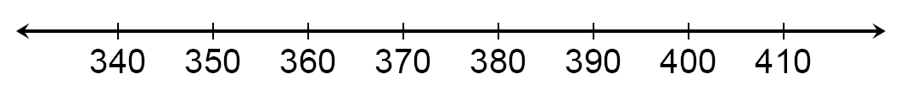
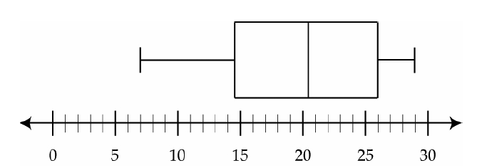
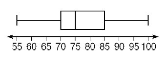
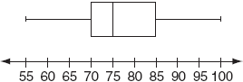
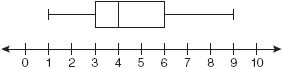
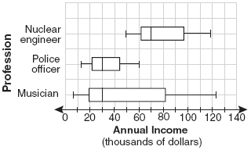

Statistics Unit
2.9 Interpreting Box and Whisker Plots
- Below are the prices of snowboards at two competing snowboard stores:
Middletown Snowboards Snowboard Central 345, 350, 356, 360, 375, 405 343, 370, 386, 392, 392, 395, 402 - Identify the 5 main statistics of each set of data.
- Draw a double box-and-whisker plot of the above data on the scale below: 
- What is the median price for a snowboard at Middletown Snowboards?
- What is the lowest price you could pay for a snowboard at Snowboard Central?
- What is the most expensive board at Middletown Snowboards?
- What is the range of prices for snowboards at Snowboard Central?
- Which price represents the 75th percentile for Middletown Snowboards?
- Which store would you rather buy a snowboard from? Why?
Middletown Snowboards Snowboard Central - The accompanying box-and-whisker plot represents the cost, in dollars, of twelve CD’s.

- Which cost is the upper quartile?
- What is the range of the costs of the CD’s?
- What is the median?
- Which cost represents the 100th percentile?
- How many CD’s cost between $14.50 and $26.00?
- How many CD’s cost less than $14.50?
- The accompanying box-and-whisker plot represents the scores earned on a math test.

- What is the median score?
- 75
- 70
- 85
- 77
- What score represents the first quartile?
- 55
- 70
- 100
- 75
- What statement is not true about the box and whisker plot shown?
- 75 represents the mean score
- 100 represents the maximum score
- 85 represents the 3rd quartile
- 55 represents the minimum score
- A score of an 85 on the box-and-whisker plot shown refers to:
- the third quartile
- the median
- the maximum score
- the mean
- What is the median score?
- What is the median price for a snowboard at Middletown Snowboards?

- 70
- 75
- 77
- 85
- What is the value of the third quartile shown on the box-and-whisker plot below?

- 6
- 8.5
- 10
- 12
-
A movie theater recorded the number of tickets sold daily for a popular movie during the month of June. The box-and-whisker plot shown below represents the data for the number of tickets sold, in
hundreds.

Which conclusion can be made using this plot?
- The second quartile is 600.
- The mean of the attendance is 400.
- The range of the attendance is 300 to 600.
- d) Twenty-five percent of the attendance is between 300 and 400.
- The accompanying box-and-whisker plots can be used to compare the annual incomes of three professions.

Based on the box-and-whisker plots, which statement is true?
- The median income for nuclear engineers is greater than the income of all musicians.
- The median income for police officers and musicians is the same.
- All nuclear engineers earn more than all police officers.
- A musician will eventually earn more than a police officer.
- The data set 5, 6, 7, 8, 9, 9, 9, 10, 12, 14, 17, 17, 18, 19, 19 represents the number of hours spent on the Internet in a week by students in a mathematics class. Which box-and-whisker plot represents the data?